Darpan
Stop paying for remote desktop.
A high-performance, lightweight remote desktop: use your Linux computer from a native Mac app. It feels local and stays private.
Free and open source · No account with us · No subscription
Get started
You sign in with the Google, Apple, GitHub or Microsoft account you already have, through Tailscale's free private network, which is built in. No Darpan account, no port forwarding, nothing to change on your router.
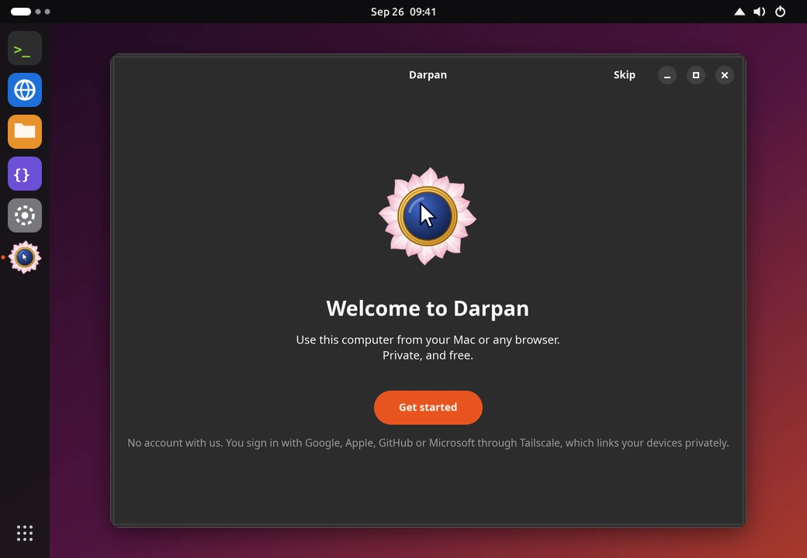
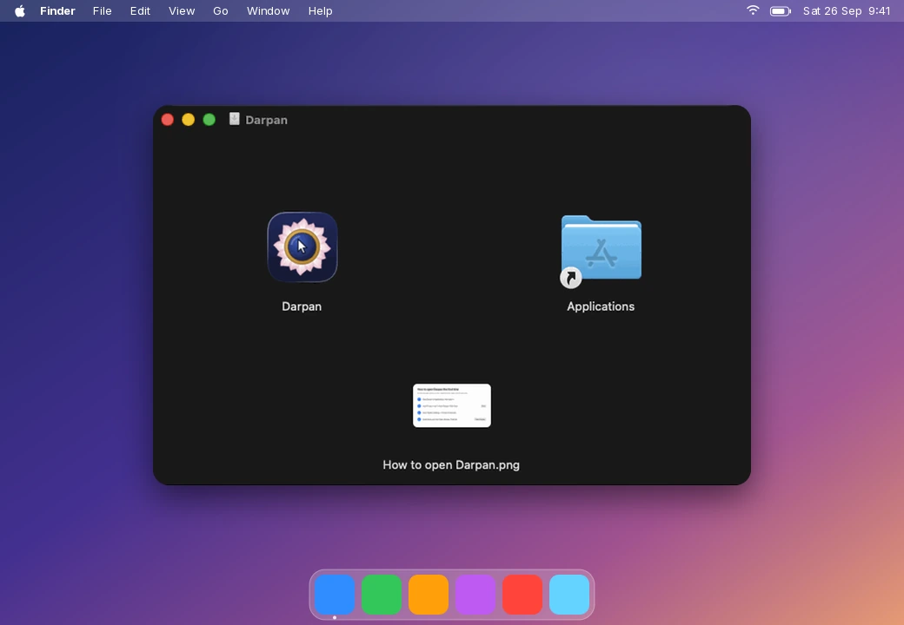
- On the Linux computer, the one you connect to: download darpan_amd64.deb and double-click it. Open Darpan and click Get started. It shows you a password.
- On the Mac, the one you connect from: download Darpan.dmg, drag Darpan to Applications and open it. The first time, macOS can't check Darpan, because it isn't notarized by Apple: click Done, then Open Anyway under System Settings → Privacy & Security.
- Connect: sign in with the same account, click your Linux computer and enter its password.
In a browser instead: on any other computer, install Tailscale, sign in with the same account, and open the address shown in the Darpan window on Linux.
Linux: Ubuntu 24.04 or similar, in an X11 session. Mac: macOS 14 or later.
Why Darpan
Fast, light and private
Works like your Mac
Everything in reach
Light on both computers
Measured on a Linux PC with an RTX 4090 at 2560×1440, viewed from a MacBook over Wi-Fi. CPU is a share of one core.
| Linux computer | Mac app | |
|---|---|---|
| Nobody connected | 0 % CPU, no GPU memory | — |
| Everyday use | 3 % CPU | 8–10 % CPU |
| Full-screen video with sound | 6 % CPU | 32 % CPU |
| Screen to screen | about 27 ms over Wi-Fi | |